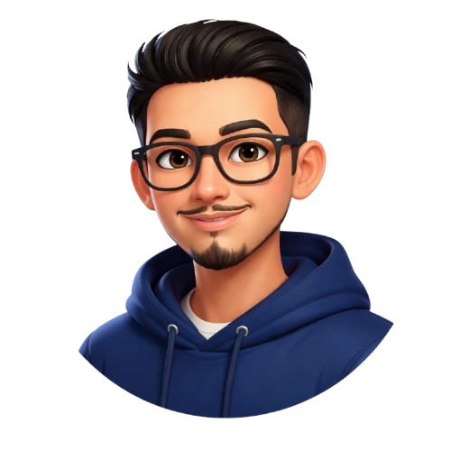

Andre Bagus Maulana
Network Engineer | NOC | BGP & Routing
Network Operation Center yang berpengalaman dalam monitoring, troubleshooting, dan pengelolaan jaringan ISP berbasis MikroTik dan Juniper.

Profile & Pendekatan Kerja
Perkenalan
Saya adalah seorang Network Engineer yang bekerja sebagai NOC, fokus pada stabilitas jaringan dan troubleshooting secara real-time.
Pengalaman
Berpengalaman dalam menangani jaringan ISP, konfigurasi routing, serta monitoring jaringan untuk memastikan performa tetap optimal.
Pendidikan
Saat ini sedang menempuh pendidikan di bidang Bisnis Digital.
Karakter Kerja
Terbiasa bekerja di bawah tekanan, cepat dalam analisa masalah, dan fokus pada solusi.
Kompetensi Network & Infrastructure
Networking
- BGP (eBGP, iBGP)
- Routing & Route Policy (Juniper)
- VLAN & IP Management
- OSPF / Static Routing
Devices & Hardware
- MikroTik RouterOS
- Juniper MX Series
- Huawei Switch / Router
- OLT ZTE & CData (GPON)
- Dell PowerEdge Server
Monitoring & Virtualization
- LibreNMS
- Grafana & SmokePing
- Proxmox VE
- VyOS Routing
Implementasi Jaringan & Solusi
Implementasi BGP Customer
Bertanggung jawab dalam konfigurasi dan maintenance BGP peer untuk customer enterprise. Mengimplementasikan route policy dan prefix filtering untuk memastikan stabilitas routing, mengurangi downtime hingga 30% melalui failover otomatis.
Monitoring Network
Mengelola infrastruktur monitoring berbasis LibreNMS dan Cacti untuk memantau 500+ perangkat jaringan. Membuat dashboard real-time untuk latency, packet loss, dan throughput, serta mengimplementasikan alerting system untuk deteksi dini gangguan.
Troubleshooting Jaringan Core
Menangani escalated issue terkait routing BGP dan konektivitas upstream. Berhasil mengidentifikasi dan menyelesaikan 95% kasus routing problem dalam SLA 2 jam, termasuk blackhole prefix dan asymmetric routing.
Troubleshooting End-to-End FTTH
Melakukan analisa dan resolusi gangguan dari core network hingga ONT pelanggan. Berkoordinasi dengan tim field untuk investigasi fisik, serta mendiagnosis issue pada layer VLAN, routing, dan perangkat user. Meningkatkan first-call resolution rate untuk trouble FTTH
Perjalanan Karir Profesional
NOC Engineer | PT Lambda Sinergi Telekomunikasi
ISP & Network Infrastructure
- Mengelola dan memonitoring jaringan ISP skala menengah dengan stabilitas tinggi
- Konfigurasi routing BGP dan route policy untuk konektivitas upstream
- Troubleshooting gangguan jaringan dari core hingga end-user
- Koordinasi dengan tim NOC untuk memastikan SLA terpenuhi
NOC Engineer | PT Helium Sinergi Telekomunikasi
Provider & Digital Infrastructure
- Monitoring real-time jaringan menggunakan LibreNMS, Smokeping, The dude dan Cacti
- Menangani incident response dan trouble ticket dari pelanggan
- Analisa root cause untuk gangguan jaringan berulang
- Dokumentasi prosedur troubleshooting dan knowledge base tim NOC
Backup FTTH Support | PT Zenith Sinergi Telekomunikasi
Fiber to The Home
- End-to-end troubleshooting jaringan FTTH dari core hingga ONT pelanggan
- Diagnosis gangguan layer fisik (ONT, ODP, OLT) dan layer routing (VLAN, IP)
- Koordinasi dengan tim lapangan untuk penyelesaian issue di site
- Pendampingan pelanggan untuk verifikasi konektivitas dan optimalisasi bandwidth
Terhubung & Berkolaborasi
andre.bgsmaulana@gmail.com
+62 895 xxxx xxxxx
linkedin.com/in/andre-bagus-noc
Siap mendukung operasional NOC, troubleshooting routing, dan optimasi jaringan ISP.
Respons cepat untuk kebutuhan network engineering.